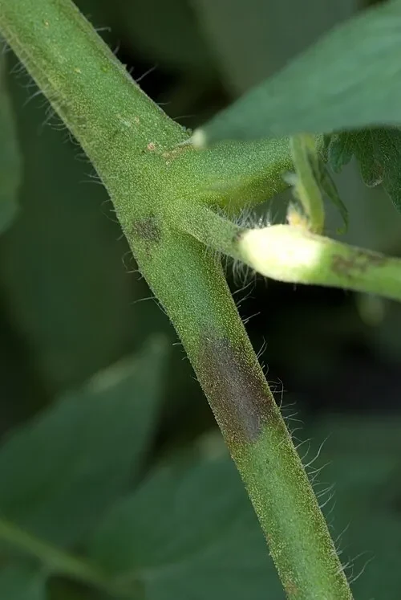

褐斑病
茎上出现褐色的斑点
这是与该表现相符的一种可能原因，请结合下方特征核对。

先看哪里
拍下斑点边缘，看表皮是平整、木栓化，还是凹陷开裂。
可能原因与下一步
老茎木栓化、擦伤和病斑可能相似。标记一处斑点，观察是否向新枝扩展。
怎样区分相似问题
比较病斑边缘与健康组织。若只有一处、恰好接触绑带或邻叶，可能是擦伤；多处新斑则要仔细检查。
现在可以做什么
在旁边放尺拍照留存，并直接往土面浇水，让枝叶表面在两次浇水之间干燥。
接下来观察什么
若斑块扩大或新梢也长斑，保留全株、受损部位正反面照片供诊断。